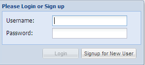
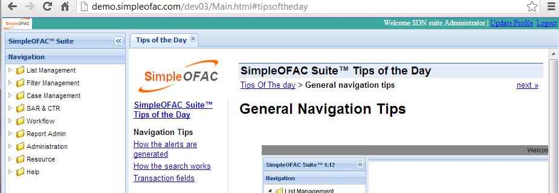
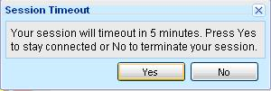

Login and logout of the system
Before you can use the SimpleOFAC Suite™, you must login to the system first.
The functions you have depend on the roles you have in the system.
So you may see a different navigation menu in the left side when you login with different id.
Login to the system
Open your favorite browser (IE, or Firefox or Chrome etc.) and type the following url in the address bar:
http://www.simpleofac.com/cp102/index.html
(replace the www.simpleofac.com with your own domain name, cp102 with your own context name)
You will see the login dialog, as follows:

Type the username and password and then click on Login button

Logout of the system
Click the Log out link to log out of the system.
If the user idles for 10 minutes, a warning dialog will pop up informing the user that the session will timeout within 5 minutes.

Click the Yes button to stay connected or the No button to log off right away.
The system will log off after 5 minutes if no action is taken.
General Tips
- Select any menu item in the left side navigation menu to open a new tab in the center panel.
If the tab has already been opened, it will be selected
- Tables: Select the header column of the table to sort the data on the column (if the column is sort-able).
Right click the table header column to show a popup menu, allowing the user to hide/show the columns.
- Select a row (by click on the row) in the table to update the details panel in the south side of the page.
- If the table is updatable, double click on the select row to open a new tab,
allowing user to update/delete the record in the center panel.
If the tab has already been opened, it will be selected
- When the user is in the Create New Tab or Update/Delete Tab, other tabs are disable.
The user has to click the Cancel, Create or Save button to switch to other tabs.
- Any changes(add/modify/delete) will also be recorded in the respective history table
and can be retrieved via respective history function.
- The search and search result can be in the same tab or separate tabs; this is configurable.